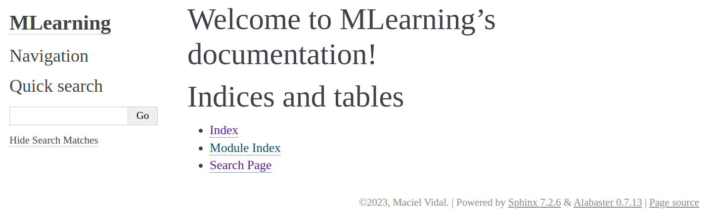
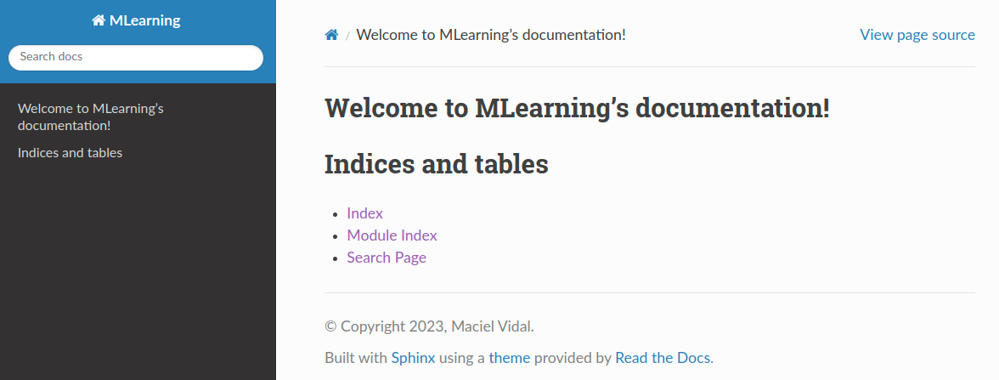

Code Documentation
As we have disscussed, documentation for ML projects is vital as it helps to clarify the project, so that data teams makes faster and continuous evolutions to it.
Comments in Code
Code comments are a form of internal documentation used by programmers to provide additional context and explanation for sections of source code. They are intended to make the related code more understandable by including information directly in the code itself.
Info!
Commenting is describing your code for developers.
Well-written comments can enhance comprehension by describing the purpose, approach, assumptions, or algorithm being implemented.
Be Meaningful
When making a comment, a good practice is to think about whether the comment is meaningful or whether it is duplicating code. For example:
# Preprocess the training data
preprocessed_train_data = preprocess(train_data)
# Split the preprocessed data into features and labels
X_train = preprocessed_train_data[:, :-1]
y_train = preprocessed_train_data[:, -1]
In a professional environment code snippets like these will be seen hundreds of times. Any data scientist knows what is happening just by reading the code.
Therefore, unless it is in an educational environment, these comments may be removed!
Still, it is important to think about whether comments could be exchanged for code improvements. For example:
In this case, the sc method could have a more suitable identifier, spectral_clustering for example, which would remove the need for the comment:
Tip! 1
Remember to don't over-comment and to not write comments in the wrong place (at random places or many lines before/after code being commented).
Code Documentation
When commenting code, the main audience is the maintainers and developers of the ML project source code.
Question 1
Answer
Some examples:
-
Data analysts: could use the models to make predictions and present them on Dashboards.
-
Consultants: consultants from external organizations could use their models to develop new solutions.
-
Backend developers: could use the model API to make decisions during a purchasing process on a website, for example.
So, it's important to go beyond just commenting code!
Sphinx
We will use sphinx to generate documentation for our ML projects.
Tip! 2
Create a new folder and develop the activities for this class in it!
To install sphinx, activate your virtual environment and do:
Then, create a docs folder:
And quickstart the documentation!
Tip! 3
Provide the:
- Project name: MLearning
- Author name(s): Your name!
- Project release []: 0.0.1
Leave the rest as the default.
$ sphinx-quickstart
Welcome to the Sphinx 7.2.6 quickstart utility.
Please enter values for the following settings (just press Enter to
accept a default value, if one is given in brackets).
Selected root path: .
You have two options for placing the build directory for Sphinx output.
Either, you use a directory "_build" within the root path, or you separate
"source" and "build" directories within the root path.
> Separate source and build directories (y/n) [n]: n
The project name will occur in several places in the built documentation.
> Project name: MLearning
> Author name(s): Maciel V.
> Project release []: 0.0.1
If the documents are to be written in a language other than English,
you can select a language here by its language code. Sphinx will then
translate text that it generates into that language.
For a list of supported codes, see
https://www.sphinx-doc.org/en/master/usage/configuration.html#confval-language.
> Project language [en]: en
Creating file /path/to/folder/conf.py.
Creating file /path/to/folder/index.rst.
Creating file /path/to/folder/Makefile.
Creating file /path/to/folder/make.bat.
Finished: An initial directory structure has been created.
You should now populate your master file /path/to/folder/index.rst and create other documentation
source files. Use the Makefile to build the docs, like so:
make builder
where "builder" is one of the supported builders, e.g. html, latex or linkcheck.
Let's see a first version of the generated documentation. To do this, call make to see all rendering options, and then:
Question 2
Answer!

Automatic Documentation Generation in Sphinx: autodoc
One of sphinx most useful features is autodoc, which allows automatic extraction of documentation from Python modules, classes and functions.
With autodoc, you don't need to copy and paste documentation into your Sphinx files. It can retrieve pydoc-style docstrings directly from your Python code and embed them into your docs.
Question 3
Question 4
Then, go to the folder docs and run the command to create reStructuredText for our Python modules.
RST
reStructuredText (RST) files are plain text files that use a lightweight markup language called reStructuredText.
They are used as the source files for creating documentation in various output formats, such as HTML, PDF, and ePub.
Rebuild and check the result:
Question 5
Question 6
Answer!

See more Here!